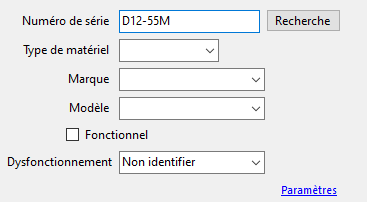

Conditions d'utilisations
Le Gestionnaire de Stock doit avoir accès à une base de données MySQL avec des tables ayant la bonne structure et les bons noms pour fonctionner (Le nom de la base de données elle même n’est pas important) et les frameworks .NET doivent être installer.
Les fonctionnalitées
Une fois connecté à une base de données (un message d’erreur apparaît au démarrage si le programme ne peut pas s'y connecter), celui-ci a 3 fonctions pour modifier la base de données :
- Ajouter des entrées dans la table de la base de données indiquée. Le numéro de série et le type de matériel doivent être renseignés. Si le numéro de série existe déjà l’ajout sera impossible.

- Transférer les appareils fonctionnels vers les dysfonctionnels et inversement, ou modifier le dysfonctionnement enregistré sur un appareil. Vous devez avoir recherché un numéro de série déjà existant au préalable.
- Supprimer l’entrée correspondant au numéro de série recherché.
De plus, le programme permet de lire les différentes tables de la base de données.
- Choisir le matériel dont on veut voir le stock.
- Choisir les stocks de matériels fonctionnels ou dysfonctionnels.
- Il est nécessaire de rafraîchir le tableau pour voir les modifications après avoir modifié les entrées de 1. et 2.
- Permet de choisir si on veut que toutes les entrées de la table s’affichent. Par défaut, seules les 9 dernières s’affichent.
Le formulaire
Les champs du formulaire se déverrouillent lorsque vous entrez un numéro de série.
Le champ « Type de matériel » doit être rempli car il dit au programme où placer l’entrée.
Les champs « Type de matériel », « Marque », « Modèle » et « Dysfonctionnement » vous offrent une liste.
Le champ « Dysfonctionnel » se verrouille si fonctionnel est cocher.
Lancer une recherche par numéro de série verrouille les champs « Type de matériel », « Marque », et « Modèle » et rempli automatiquement tout les champs. Toute modification dans le champ « Numéro de série » les déverrouille.
